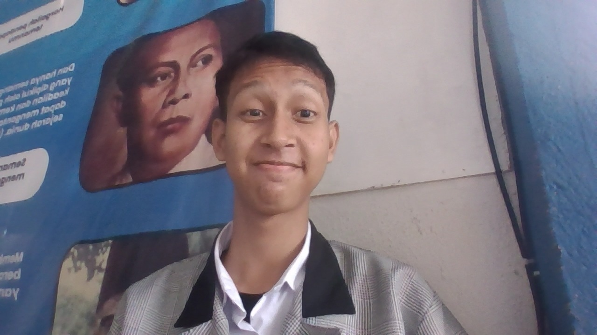

About Me
Halo Selamat Datang di Portofolio Saya Fadhil Abdan Asysyakur. Seorang siswa di SMK WIKRAMA Bogor dari Jurusan PPLG.
Ketertarikan pada dunia pemograman membawa saya sampai bersekolah di SMK WIKRAMA, selain minat di dunia coding saya juga meyukai dunia Desain, maka dari itu impian saya saat besar nanti salah satunya adalah menjadi sebuah UI/UX Desainer juga menjadi seorang Frontend
----------------------------------------------------------------